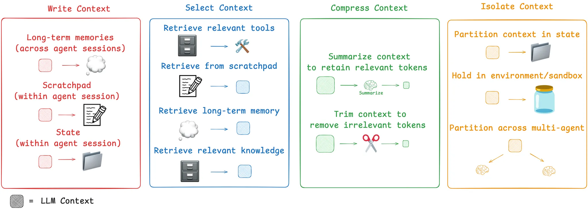

近年AI应用技术串讲与优质文档记录-笔记
建议：从技术未出现的时的背景进行思考，在什么需求的促使下提出这个工程方案，且该方向存在的问题，为何某种方案最后被大家采纳为行业的标杆，后续又有什么工作进行了改善
1 LLM
《Attention is all you need》提出Transformer架构，促使后续的GPT等大模型的出现。
后续GPT系列的模型，仅采用了Transformer的解码器实现文本生成功能（其原因需要进一步学习）。
之后，出现了很多chatbot。
Prompting Engineering
为什么对同一个大模型，有的人问问题可以得到更好的回复，这就涉及到提示词工程。
但是只能优化提示词质量，也受到大模型窗口大小的限制。
Fine-tuning
提示词对模型的提升还是受限的，进一步可以使用微调（Fine-tuning）的方式优化。
比较值得关注的事LoRa这篇论文，将大模型千亿级参数量的调整压缩到了低纬度的空间进行调整，大幅度降低了计算成本。
可是微调也不是一直有效——
- 仍然需要GPU
- 需要数据集
- 需要长时间训练
RAG检索曾倩技术
最开始是为了解决大模型幻觉问题。
工作：从外部知识库检索相关信息，再结合信息一起生成回答，进而提升准确和时效性。
回答问题时可以提供更多的有效信息。
可以基于模型预训练或者微调阶段尚未学习的私有知识的需求，比微调更容易落地。没有使模型变得更聪明，在工程中有效落地很困难。
难点：文档的切片和入库方式、切入模型的选择、检索算法的选择等…… 若用户请求和文库中的数据相似度较低如何处理。

Function call
让模型跳出chatbot，成为一个多功能的工具。
OpenAI设计了一套接口文档（非业内通用协议）。
基本流程如下：

于是大家开始将自己的LLM接入到外部工具中。
可是进一步人们发现，这些外部工具的操作流程存在大量重复，于是有了下一个工作的出现：MCP
MCP
模型上下文协议 (Model Context Protocol，MCP) 是一种开放标准 ，它定义了人工智能应用程序应如何与外部资源通信。MCP 提供了一种统一的解决方案，无需每个人工智能工具自行创建自定义集成。
是Anthropic（Claude的母公司）在2024年11月提出的规范。

Agent
上述工作只是让LLMs有了更好的聊天体验和调用外部工具的能力，但不具备循环工作的能力。
比如，人类确认任务目标后会反复确认已有的能力、资源和任务之间的gap，信行动过程中对比行动结果和目标之间的差距，在和环境的互动过程中完成计划。
Agent就进行了这个循环往复的模拟，Agent Loop：思考→行动→观察
推荐的论文：ReAct: Synergizing Reasoning and Acting in Language Models
后来发展处两种Agent设计路线：
- 侧重规划的Agent
- 侧重反思的Agent
Multi-Agent
在之前模型的能力还是非常有限的，所以一个工作会分为多个Agent共同完成，通过拆分任务和隔离上下文解决单Agent难以处理的复杂问题。
缺点：
- Token消耗大
- 协作效率低
- 系统复杂度搞
- ……
Context Engineering
上下文工程：Agent循环过程中产生太多数据，这些海量信息需要被精确选取。

Agent Skill
将Agent的能力（Prompt，工具脚本，文档等）封装为可复用模块，实现低门槛分享与复用，Agent在运行过程中按照需求激活不同的Skill
OpenClaw
在本地运行的AI助手，创新点主要在交互上。
Harness Engineering
驾驭工程：强调通过构建受控环境，让Agent在约束下高效可靠地完成长周期复杂任务。包含围绕Agent构建约束机制、反馈回路、可靠上下文等一系列工程实践。
未来对AI工程师的重新定义。
近年AI应用技术串讲与优质文档记录-笔记
https://zhouwentong7.github.io/2026/06/30/近年AI应用技术串讲与优质文档记录-笔记/